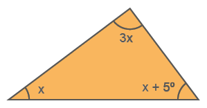
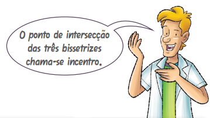

156
CAPÍTULO 1 - Triângulos
Elementos e classificação dos triângulos
As formas geométricas serviram de inspiração para muitos artistas, como pintores, escultores, desenhistas, tecelões e outros. Foi o que ocorreu com a alemã Anni Albers (1899-1994).
Observe a seguir alguns dos trabalhos da artista:
ALBERS, Anni. Estudo para A. 1968.
Guache sobre papel gráfico de cópia
heliográfica. 44,1 cm x 35,4 cm.
Acer-
vo Fundação Josef and Anni Albers.
ALBERS, Anni. DR XX. 1974. Tin-
ta
vermelha com lápis sobre papel,
64,5 cm x 49,8 cm. Acervo Funda-
ção
Josef and Anni Albers.
157
Ao observar as obras de Anni Albers, podemos perceber uma forma
geométrica predominante que foi estudada nos anos anteriores. Vamos re-
lembrar os seus elementos e a sua
classificação quanto às medidas dos
seus lados e de seus ângulos.

1. Troque ideias com um colega e, no caderno:
- escrevam essa formula geometrica e indiquem os seus elementos
- representem essa forma geométrica e indiquem os seus elementos;
- escrevam a classificação dessa forma geométrica quanto às medidas
dos seus lados e dos seus ângulos.
> Condição de existência de um triângulo
1.Troque ideias com um colega e verifiquem se é possível construir umReinaldo Rosa/Acervo da Editora
triângulo cujos lados medem 3 cm, 4 cm e 5 cm respectivamente. Para
construir o triângulo, vocês podem utilizar régua e compasso. 2.Agora, verifiquem se é possível construir um triângulo cujos lados medem
8 cm, 4 cm e 3 cm. 3.Qual é a condição para que um triângulo seja construído?
158
Soma das medidas dos ângulos internos de um triângulo
Vimos por meio de um experimento, que a soma das medidas dos ângulos internos de um triângulo é igual a 180º.


Agora, vamos relembrar a demonstração estudada na unidade 6, em que esta propriedade é válida para todo triângulo.
Considere o triângulo ABC e as retas r e s paralelas.
No triângulo ABC, temos que a, b e
c representam as medidas dos ângulos
internos desse triângulo.Como r // s, então:
► c = x (ângulos alternos internos)
► b = y (ângulos alternos internos)
► x + a + y = 180º (ângulo raso)
Dessa forma, temos que c + a + b = 180º.
Essa demostração pode ser realizada utilizando-se qualquer triângulo.
Em qualquer triângulo, a soma das medidas dos ângulos internos é igual a 180º.
Relação entre a medida de um ângulo externo e as medidas de dois
ângulos internos não adjacentes a eleVamos estudar agora uma relação que pode ser estabelecida entre a me-
dida de um ângulo externo e as medidas de dois ângulos internos não adjacen-
tes de um triângulo.Inicialmente realizaremos um experimento para mostrar essa relação e, em
seguida, faremos a demonstração de que ela é válida para qualquer triângulo.Vamos desenhar um triângulo qualquer em uma folha de papel sulfite,
destacando as medidas dos seus ângulos internos. Depois, o recortaremos em
três partes, cada parte contendo um ângulo interno do triângulo original.
159
![A primeira figura é um triangulo escaleno, cujo lado maior é a base e está na horizontal e o lado menor está à direita. Os ângulos internos estão marcados por cores: o ângulo formado entre a base e o lado maior é vermelho; o ângulo formado entre a base e o lado menor é amarelo e o ângulo formado pelos lados é verde. As três outras figuras são partes do primeiro triângulo fatiado em três. Assim, a partir do ângulo verde é formado um triângulo retângulo; a partir dos ângulos vermelho e amarelo são formados dois quadriláteros com lados de tamanhos diferentes.](../../resources/images/8ANO_U7_Image/M8A_3.png )
Em seguida, escolhemos um dos ângulos internos deste triângulo e o colocamos sobre uma folha de papel sulfite branca para desenhar seu respectivo ângulo externo. Observe:

Note que os outros dois ângulos internos, juntos, têm a mesma medida do ângulo externo.

Por meio desse experimento, podemos observar que a medida do ângulo externo de um triângulo é igual à soma das medidas dos dois ângulos internos não adjacentes a ele.
Vamos verificar agora, por meio de uma demonstração, que essa relação é válida para qualquer triângulo.
Considere o triângulo ABC, em que a, b e c representam as medidas dos ângulos internos desse triângulo e x representa a medida do ângulo externo. Prolongando-se o lado AB, temos:
160
Sabemos que:
- b + x = 180º (ângulos suplementares) (I)
- a + b + c = 180º (soma das medidas dos ângulos internos do triângulo) (II)
De (I) e (II), temos que:
Dessa forma, mostramos que, em qualquer triângulo, a medida do ângulo
externo é igual à soma das medidas dos ângulos internos não adjacentes
a ele.Como exemplo, vamos determinar a medida do ângulo x, indicado no triângulo a seguir.
x = 95º + 35º
x = 130º
Logo, a medida do ângulo externo x é 130º.
1.Com o auxílio de régua e compasso,
tente construir um triângulo cujas me-
didas dos lados sejam:
- 4 cm, 3,5 cm e 5 cm;
- 6,5 cm, 5,5 cm e 5,5 cm;
- 8 cm, 4,5 cm e 4,5 cm;
- 8 cm, 4 cm e 3 cm.
2.Quais alternativas a seguir representam as medidas dos
lados de um triângulo? Justifique em seu caderno.
- 4 cm, 5 cm e 10 cm.
- 5 cm, 11 cm e 8 cm.
- 13 cm, 7 cm e 4 cm.
- 8 cm, 9 cm e 10 cm.
3.Nos triângulos a seguir, determine o valor de x.
161
4.Determine o valor de x de cada triângulo a seguir.
5.O ângulo externo de um triân-
gulo mede o triplo do ângulo in-
terno de mesmo vértice. Qual é
a medida desses ângulos?
6.(OBMEP) Encontre a medida do ângulo
BÂD, sabendo que DÂC = 39º, AB = AC e
AD = BD.
7.(OBMEP) A figura mostra dois trechos de
300 km cada um percorridos por um avião.
O primeiro trecho faz um ângulo de 18º com
a direção norte e o segundo, um ângulo de
44º, também com a direção norte. Se o avião
tivesse percorrido o trecho assinalado em
pontilhado, qual seria o ângulo desse trecho
com a direção norte?
- 12º
- 13º
- 14º
- 15º
- 16º
- 12º
![Esquema em formato de triângulo, representando os trechos percorridos pelo avião. A base do triângulo, que corresponde a uma linha pontilhada, está voltada para a esquerda, e o vértice oposto está para a direita. À esquerda do esquema há uma rosa dos ventos, que indica o norte para cima.
O primeiro trecho, que faz ângulo de 18° com a direção norte (indicada como uma linha vertical), é representado por um seguimento de reta que tem início em um ponto ao sul e segue até um ponto a leste.
No ponto a leste, o segundo trecho, que faz ângulo de 44° com a direção norte (indicada como uma linha vertical), também representado por seguimento de reta, segue para um ponto a noroeste.
Uma linha pontilhada (base do triângulo) liga os pontos noroeste e sul. O ângulo formado entre a linha pontilhada e a linha vertical que delimita o ângulo de 18° do primeiro trecho está indicado com um símbolo de interrogação.](../../resources/images/8ANO_U7_image/U8_01_1.png)
162
Bissetrizes e incentro
Em qualquer triângulo podemos traçar três bissetrizes.
Usando régua e compasso, vamos traçar as bissetrizes do triângulo ABC.
1.ºColoque a ponta-seca do compasso no vértice A e, com uma abertura qualquer, marque os pontos 1 e 2.
2.ºCom a ponta-seca do compasso, primeiro em 1 e depois em 2 e com a mesma abertura, marque o ponto 3, no qual os arcos se intersectam.
3.ºEm seguida, trace o segmento de reta que parte do vértice A e passa pelo ponto 3, encontrando o ponto D. O segmento AD é a bissetriz do ângulo BÂC.
163
4.ºDe modo análogo, trace as bissetrizes dos outros dois ângulos do triângulo, determinando assim, os pontos E, F e I.
O segmento de reta com origem em um dos vértices do triângulo e que divide o ângulo em dois ângulos com a mesma medida denomina-se bis- setriz de um triângulo.
Ilustrações: Reinaldo Rosa/Acervo da Editora
1.Reproduza os triângulos a seguir e, uti-
lizando régua e compasso, encontre o
incentro de cada um deles.
2.No triângulo ABC, temos que
med () = 60º e BD e são as bisse-
trizes dos ângulos e , respectivamente.
Calcule a medida do ângulo BC .
3.Determine o valor de x em cada um164
dos casos a seguir.
- DG é bissetriz de EF.
- ΔABC é isósceles e BD e CD são
bissetrizes.
gulo . Calcule o valor de y - x.
![Ilustração de um triângulo escaleno ABC. A lateral esquerda é a maior, e formada pelos pontos AB, onde A está no vértice superior e com ângulo demarcado em x. A lateral direita é formada pelos pontos AC. A reta horizontal, que faz a base da figura, é formada pelos pontos BC. Essa reta ultrapassa o ponto B e têm um ângulo externo demarcado em y. Do ponto C, sai uma reta inclinada para cima e para a esquerda, com ângulo demarcado em 30°, ela se cruza em X com a reta AB, lateral esquerda. O cruzamento está representado pelo ponto P e ângulo demarcado em 45°.](../../resources/images/8ANO_U7_image/Untitled-67.png)
5.Em um triângulo DEF, med () = 48º e
med () = 66º. Sendo EG a bissetriz do
ângulo , calcule a medida do ângulo
EF.
6.Calcule a medida do ângulo obtuso for-
mado pelas bissetrizes internas de um
triângulo equilátero.
7.Em um triângulo ABC, os ângulos e
medem, respectivamente, 40º e 60º.
Encontre a medida do maior ângulo
formado pelas bissetrizes de e .
8.A bissetriz de um dos ângulos da base de
um triângulo isósceles forma, com esta,
um ângulo de 32º. Quais as medidas dos
ângulos internos desse triângulo?
9.(OBMEP) Na figura, temos = 50º,
sendo AD e CD as bissetrizes dos ân-
gulos e , respectivamente. Qual é
a medida do ângulo AC?- 90º
- 100º
- 115º
- 122,5º
- 125º
165
Alturas e ortocentro
Em qualquer triângulo, podemos traçar três alturas.
O segmento de reta com uma extremidade em um dos vértices do triângulo
e a outra extremidade no lado oposto ou em seu prolongamento, formando
um ângulo de 90º com esse lado, denomina-se altura de um triângulo.O ponto de intersecção das três alturas chama-se ortocentro.
Vamos traçar as alturas do triângulo ABC usando régua e compasso.
1.ºSobre o lado BC, trace uma reta s auxiliar. Com a ponta-seca do compasso em A, trace um arco que intersecte s em dois pontos, encontrando os pontos P e Q.

2.ºCom a ponta-seca do compasso, primeiro no ponto P e depois no ponto Q e a medida da abertura maior que a metade da medida de PQ, trace dois arcos que se intersectem, encontrando o ponto R.

166
3.ºTrace AH passando pelo ponto R e perpendicular ao lado BC. O segmento AH é a altura relativa ao lado BC.

4.ºDe modo análogo, trace as outras alturas do triângulo, encontrando os pontos J, K e O.

O incentro é o centro de uma circunferência inscrita ao triângulo ABC.
AH: altura relativa ao lado BC.
BK: altura relativa ao lado AC.
CJ: altura relativa ao lado .
O: ortocentro.
1.Reproduza os triângulos no caderno e, utilizando régua e compasso, encontre o ortocentro de cada um deles.

- Em qual triângulo, o ortocentro é o encontro dos prolongamentos
das três alturas?
- Em qual triângulo, o ortocentro coincide com um dos
vértices?
2.Calcule as medidas dos ângulos x e y.
- AH é altura.
![) Ilustração de um triângulo escaleno ABC. A reta horizontal é a maior e faz a base da figura. Os três vértices estão representados por pontos. Vértice superior, representado por A, vértice inferior esquerdo, representado por B e com ângulo demarcado em 64°, e vértice inferior direito, representado por C com ângulo demarcado em 42°. Uma reta vertical, sai do vértice A, demarcando dois ângulos, do lado esquerdo y, e do lado direito x. A reta vertical vai até a reta horizontal, formando um vértice identificado por H, e dividindo o triângulo escaleno em dois triângulos retângulos.](../../resources/images/8ANO_U7_image/U8_03_1.png)
- AH é altura.
![Ilustração de um triângulo escaleno ABC. A reta horizontal é a menor e faz a base da figura. Os três vértices estão representados por pontos. Vértice superior, representado por A e com ângulo demarcado em y, vértice inferior esquerdo, representado por C e com ângulo demarcado em x, e vértice inferior direito, representado por B e com ângulo demarcado em 38°. Uma reta, tracejada e horizontal, sai do vértice C apontada para a esquerda. Uma outra reta, tracejada e vertical, sai do vértice A, demarcando um ângulo de 28°, e vai ao encontro da reta tracejada horizontal, formando o vértice H. Essas duas retas tracejadas formam um triângulo retângulo.](../../resources/images/8ANO_U7_image/Untitled-62.png) 3.Em um triângulo ABC, isósceles, a altura
3.Em um triângulo ABC, isósceles, a alturarelativa à base BC determina, no vértice
A, dois ângulos iguais à quarta parte da
medida de cada ângulo da base. Calcule
as medidas dos ângulos desse triângulo.
sendo AB ≡ BC e BM a altura relativa
ao lado AC. Calcule a medida do ângu-
lo AM.
![Ilustração de um triângulo ABC. A reta horizontal é a menor e faz a base da figura. Os três vértices estão representados por pontos. Vértice superior, representado por A, vértice inferior esquerdo, representado por B, e vértice inferior direito, representado por C. A reta horizontal, que faz a base da figura, ultrapassa o vértice B demarcando um ângulo externo de 155°. Do vértice B, sai uma reta inclinada para cima e para a direita, ela ultrapassa a lateral direita da figura, formando o vértice M.](../../resources/images/8ANO_U7_image/Untitled-61.png)
Medianas e baricentro
Em qualquer triângulo, podemos traçar três medianas.
O segmento de reta que une um vértice do triângulo ao ponto médio
do
lado oposto a esse vértice denomina-se mediana de um triângulo.
O ponto de intersecção das três medianas chama-se baricentro.
Vamos traçar as medianas do triângulo DEF usando régua e compasso.

1.ºCom a ponta-seca do compasso em E e a
medida da abertura maior que a metade
do segmento EF, trace dois arcos, confor-
me a imagem.
so em F, trace dois arcos
que intersectem os arcos anteriores, encontrando os pontos R e S. Trace uma
reta auxiliar que passe por esses dois pontos, en-
contrando o ponto M1.
M1: ponto médio do segmento EF.

168
3.ºTrace o segmento de reta que une o vértice D ao ponto M1.

trando os pontos M2 e M3. No encontro das medianas, marque o ponto G.

DM1: mediana relativa ao lado EF.
FM2: mediana relativa ao lado ED.
EM3: mediana relativa ao lado DF.
G: baricentro do triângulo.
Imagens: Acervo da Editora
Lembre-se: em um triângulo isósceles, a altura relativa à base coincide
com
a mediana e a bissetriz.
lizando régua e compasso, trace as
medianas de cada um deles para en-
contrar o baricentro. a)

b)
169
Mediatrizes e circuncentro
A prefeitura de uma cidade pretende construir uma creche que
atenderá
os moradores de três bairros. A localização escolhida é um ponto que está à mesma
distância dos três bairros. Observe a representação desses bairros:
![Duas ilustrações. A primeira é de um mapa colorido com a região de três bairros dentro de uma área amarela. Nesta área está a identificação de três bairros demarcados com um ponto rosa: Bairro da Califórnia, em cima e à esquerda. À direita e acima, o Bairro Margarida. No centro abaixo, o Bairro do Carmo. Ao redor da área amarela, outras áreas se identificação mostram a divisão nas cores verde, laranja, azul, roxo e vermelho. A segunda ilustração é a área amarela ampliada. Um triângulo se forma com a união dos pontos dos três bairros. Quase ao centro do triângulo um outro ponto rosa. Uma flecha vermelha indica nesse ponto o Local em que deverá ser construída a creche.](../../resources/images/8ANO_U7_image/Mat-8A_U8_07.png)
A creche deverá ser construída num ponto equidistante dos três bairros.
Vamos considerar um triângulo cujos vértices sejam representados
pelos
três bairros. A creche será representada pelo ponto de encontro das mediatri-
zes dos
lados desse triângulo.
A reta perpendicular que passa pelo ponto médio de um dos lados do triângulo denomina-se mediatriz.
O ponto de intersecção das mediatrizes chama-se circuncentro.
170
Vamos traçar as mediatrizes do triângulo ABC usando régua e compasso.
ponto B e a medida da abertura maior
que a metade de BC, trace dois arcos,
conforme a imagem.
em C, trace dois arcos que intersectem os arcos ante-
riores e determinem, no encontro deles, dois pontos.
Depois, trace a reta s passando por esses dois pontos.
do as retas r e t e o ponto O, formado pela intersecção das três mediatrizes.
Reta s: mediatriz relativa ao lado BC.
Reta t: mediatriz relativa ao lado AB.
Reta r: mediatriz relativa ao lado AC.
O circuncentro, ponto de encontro das mediatri-
zes, é o centro
de uma circunferência circunscrita ao
triângulo e que passa pelos vértices A, B e C.
O incentro (ponto de encontro das bissetrizes), o ortocentro (ponto de
encontro das alturas), o baricentro (ponto de encontro das medianas) e
o circuncentro (ponto de encontro das mediatrizes) são chamados de
pontos notáveis de um triângulo.
171
lo isósceles DEF e trace a circunferên-
cia circunscrita a ele.
2.Desenhe três pontos, como os repre-
sentados a seguir, e encontre um pon
to que seja equidistante aos três pon-
tos dados.
seu caderno e encontre o ortocentro
de cada um deles.
a)
b)
Casos de congruência de triângulos
Observe estes triângulos:

Esses triângulos são congruentes, pois, ao girar o primeiro triângulo até este se sobrepor ao segundo, eles se encaixarão perfeitamente.

172
Reinaldo Rosa/Acervo da Editora
Para que dois triângulos sejam congruentes, eles precisam ter três pares de lados correspondentes congruentes e três pares de ângulos correspondentes congruentes.

Existem casos de congruência que nos permitem verificar se dois triângulos são congruentes, relacionando as condições mínimas para que isso ocorra.
Caso lado, lado, lado (LLL)
Se dois triângulos têm os três lados correspondentes congruentes, então eles são congruentes.
![Dois triângulos isósceles alaranjados do mesmo tamanho: o primeiro foi nomeado de ABC. Na lateral AB, um risco. Na lateral AC, dois riscos. No centro da base BC, três riscos. AC. À direita, o outro triângulo nomeado DEF. Na lateral entre DE, um risco. Na lateral DF, dois riscos. No centro da base EF, três riscos. Triangulo ABC, Truangulo DEF reta AB igual a Reta DE, Reta AC igual a Reta DF, Reta BC igual a Reta EF, Angulo A igual a Angulo D, Angulo B igual a angulo E, Angulo C igual a Angulo F, entao o triangulo ABC igual ao triangulo DEF](../../resources/images/8ANO_U7_Image/M8A_34.png)
Caso lado, ângulo, lado (LAL)
Se dois triângulos têm dois lados correspondentes congruentes e o ângulo formado por esses lados também é congruente, então eles são congruentes.

173
Caso ângulo, lado, ângulo (ALA)
Se dois triângulos têm um lado congruente e os dois ângulos adjacentes a esse lado também são congruentes, então eles são congruentes.

Caso lado, ângulo, ângulo oposto (LAAO)
Se dois triângulos têm um lado, um ângulo adjacente a esse lado e o ângulo oposto ao mesmo lado congruentes, então eles são congruentes.
![Dois triângulos escaleno verdes do mesmo tamanho e com o vértice apontado para baixo: o primeiro foi nomeado de ABC. No centro da base AB um risco. No ângulo interno A dois riscos. No ângulo do vértice C, um risco. À direita, o outro triângulo nomeado DEF. No centro da base DE um risco. No ângulo interno D dois riscos. No ângulo do vértice F, um risco. Triangulo ABC, Truangulo DEF reta AB igual a Reta DE, Angulo A igual ao angulo D, Angulo Oposto: Angulo c igual Ao Angulo F entao o triangulo ABC igual ao triangulo DEF](../../resources/images/8ANO_U7_Image/M8A_37.png)
Caso especial de congruência de triângulos retângulos: cateto-hipotenusa
Os lados de um triângulo retângulo recebem nomes especiais.
Num triângulo retângulo, o lado oposto ao ângulo reto denomina-se hipotenusa, e os lados que formam o ângulo reto chamam-se catetos.
Se dois triângulos retângulos têm, respectivamente, a hipotenusa e um dos catetos congruentes, então eles são congruentes.

174
Vejamos um exemplo de situação na qual podemos utilizar o conceito de congruência para determinar um valor desconhecido.
- Os triângulos ABC e DEF são congruentes. Determine os valores de x e y.
Pelas figuras, temos:
≡ EF e BC ≡ DE
Logo, x = 7 e y = 30.
Sendo BC ≡ CD, o ΔABC e o ΔCDE
são congruentes? Por quê?
são congruentes. Calcule os valores
de x e y.
175
4.Verifique se as afirmações são verdadeiras ou falsas. No caderno, corrija as falsas.
a)Dois triângulos congruentes têm perímetros de mesma medida.
c)Se dois triângulos têm os três lados correspondentes congruentes, então eles são congruentes.
d)Dois triângulos equiláteros são sempre congruentes.
e)Se dois triângulos são congruentes, então eles têm a mesma área.
5.Verifique quais pares de triângulos são
congruentes e indique qual é o caso de
congruência.
![Sete triângulos nomeados de A, B, C, D, E, F, G. O triângulo A é verde. O maior lado, à esquerda , mede 12 centímetros. O ângulo interno na base à esquerda mede 70 graus. No vértice de cima e central, 45 graus. O triângulo B é azul. A base mede 15 centímetros; o lado esquerdo 13 centímetros; o lado direito 10 centímetros O triângulo C é alaranjado. A base é o lado menor, medindo 8 centímetros e a lateral 9 centímetros. O triângulo D é rosa. O lado maior mede 15 centímetros, o mediado 13 centímetros e o menor, 10 centímetros. O triângulo E tem dois lados medindo 12 centímetros. Os ângulos internos identificados são: 45 graus e 70 graus. O triângulo F é amarelo. Ele forma um ângulo de 90 graus no ângulo da base, à esquerda. O lado maior mede 7 centímetros e o menor 5 centímetros. O triângulo G é verde. Ele forma um ângulo de 90 graus na base, à direita. O lado maior mede 7 centímetros e o menor 5 centímetros.](../../resources/images/8ANO_U7_image/Untitled-34.png)